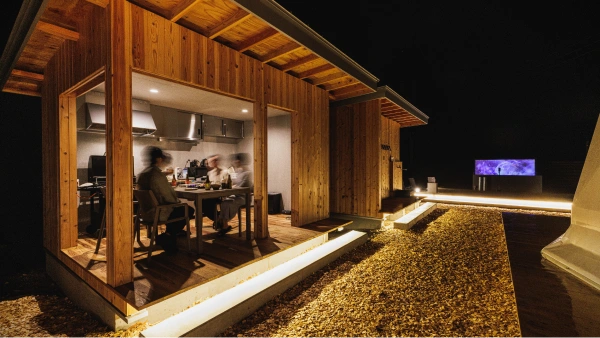
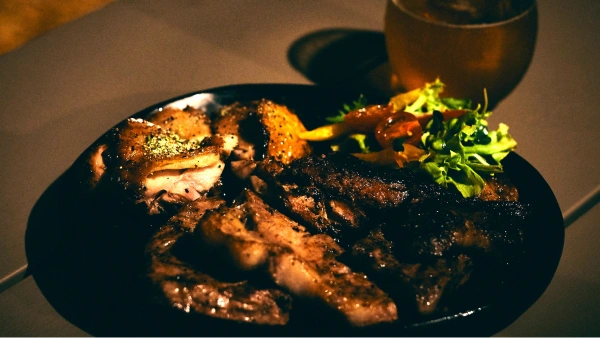
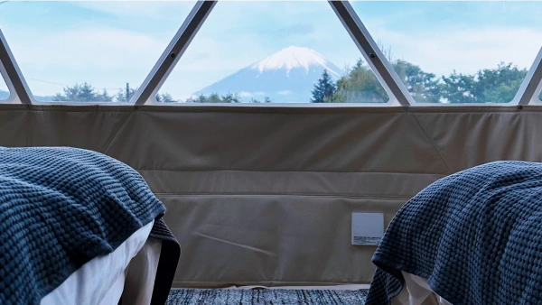
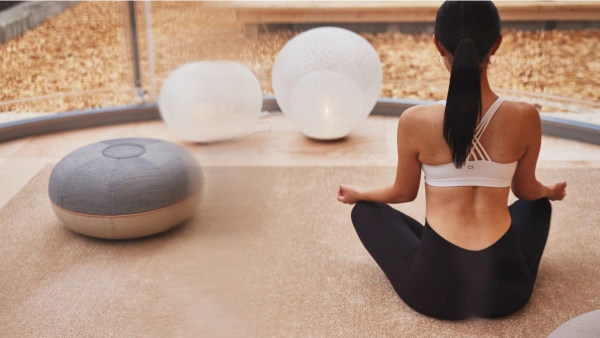

CREATIVE TRIP
都会から隔離された富士の麓に存在する
"1日2組限定"のラグジュアリーグランピング施設
自らの奥底に潜むクリエイティビティを解放し
癖になるほどの ”Creative Trip” な体験を
プライベートな空間で
人間本来の五感を
研ぎ澄ませる
約700㎡の土地を惜しみなく使用した敷地内は
大自然に囲まれた完全プライベート空間となっており
2つのドーム型テント、キッチンダイニング、
プライベートサウナ、露天風呂、水風呂、
屋外の畳スペース、座湯シアターなど、
五感を開放する贅沢なコンテンツが用意されています。
他のお客様やスタッフを気にすることなく、
自然の中のプライベート空間だからこそ実現できる
〝Creative Trip〟へ皆様を誘います。
Muda is more
「dots by Dot Glamping Suite」の体験コンセプトは”Muda is more”
都心から数時間かかるような山奥まで足を運ぶという「Muda」
ミルで豆を挽いてコーヒーを淹れるという「Muda」など
グランピングという非日常の中には、多くの「Muda」があり、現代において忌避されがちな「Muda（無駄）」にこそ価値があるのではないかと考えました。
日常から離れ、「Muda」な体験をするからこそ人間本来の五感が刺激され、新たなクリエイティビティが生まれ人生に膨らみが生まれます。
「dots by Dot Glamping Suite」では、そんなクリエイティビティを刺激する「Muda」を提供します。
サウナ・露天水風呂
滞在中いつでも自由に利用できる「プライベートサウナ」を
各専有スペースにご用意しています。
セルフロウリュも可能となっておりますので
お気に入りのアロマをお持ちいただくことも可能です。
天気が良ければ、サウナからも富士山をご覧いただけます。
サウナ後は、富士の雪解け水が含まれた露天水風呂をご堪能ください。
ととのい
サウナの外には「露天水風呂」や
外気浴スペースとしてご利用いただける「星見たたみ」があり、
富士の風を感じながら最高の”ととのい”を提供します。
さらに、湯船に浸かりながらプロジェクターで映像を楽しめる
「座湯シアター」では、屋外で温かいお湯に浸かりながら
時間を気にすることなく「Muda」なひとときを過ごすことができます。
-
 自然と融合したアウトドアダイニング
静かで澄み渡った富士の空気の中では
普段は話さないような深い話も自然とできてしまうような空間設計にこだわりました。
「dots by Dot Glamping Suite」での宿泊体験を通して自分だけでなく仲間の内面を知るきっかけができればと思います。 -
 地のお食事
「dots by Dot Glamping Suite」では自分の”内側”に意識を向けていただくため、五感にこだわって空間設計をしています。
そのうちのひとつが味覚。富士の地元の旬の食材そのものの旨みを活かした特別なBBQをご堪能いただけます。 -
 MOON Dome
グランピングで定番のドームテントを1つの専有スペースに2種類ご用意しました。
「MOON Dome」はベッドルームになっており、静かな夜のひとときを提供します。 -
 SUN Dome
「SUN Dome」という透明なドームテントもご用意しております。
「SUN Dome」では朝日を浴びながらヨガをしたり、静かに瞑想をしたり、団らんの場として活用をしたりとタイミングに合わせて様々な「Muda」な使い方が可能です。